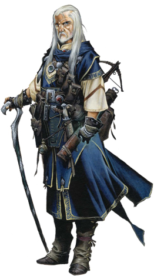

| 파이터 | | | 매직 유저 | | | 시프 | | | 클레릭 | | | 드워프 | | | 엘프 |
| 기본 정보 | | | 기본 조작 | | | 고급 조작 | | | 주문 | | | 콤보의 법칙 |
MAGIC USER
|  | 매직 유저(Magic User) - Mysterious Spellcaster 매직 유저는 육체적인 훈련은 거의 하지 않는 탓에 근력이 약해서 다른 어떤 파티원보다 약해 보일 수 있다. 그러나 그들의 마법은 물리력의 한계를 넘어 강력한 파괴력을 보여주며 공간을 왜곡시키고 시간을 지배하는 창과 칼로는 보여줄 수 없는 힘을 보여준다. 그들은 마치 학자들처럼 마법에 대해 공부를 하고 탐구를 한다. 또한 다양한 시험과 경험을 통해 항상 새로운 주문을 배우며 주문의 힘과 성능을 향상시키고 보다 능숙하게 다루기 위해 많은 시간을 투자한다. 동료들과 마법 이론에 대해 토론을 하기도 한다. 그들에게 있어서 마법이란 재능이 아닌 노력의 산물 인 것이다. 지식을 탐구하는 자들 답게 명예와 재물을 위한 모험이 아닌, 지식과 진리를 위한 모험을 주로 한다. 주문은 준비시간을 필요로 하는 것 이기에 그들의 모험은 주문을 준비 할 수 있는 시간을 벌 수 있도록 하기 위해 신중하면서도 조심스럽다. (이 게임에선 밸런스를 위해 시전 중엔 다른 시간이 멈춤.) 육체적인 훈련은 거의 하지 않는 탓에 육탄전에 약할 수 밖에 없으며 그렇기 때문에 동료들의 보호를 받으며 마법으로 지원하는 역할을 맡는 경우가 많다. |
Status
게임에서의 특징 공격기술이 타 클래스보다 적고 HP와 방어력 또한 낮아서 육탄전에 약하다.
대신 후반으로 갈 수록 레벨이 오르고 장비가 좋아지면서 주문의 위력이 상당히 강해진다. 현란한 컨트롤 보다는 주문과 아이템을 적재적소에 쓰는 전략적인 플레이가 요구된다. - 무기는 스태프 오브 스네이크를 제외한 스태프류와 완드류, 단검류, 오일류만 사용이 가능.
- 슬래쉬, 대공기, A+B공격이 존재하지 않는다. - 힘이 약해서 상자를 들거나 장애물을 밀 수 없다. - 단검류와 오일류의 투척속도가 드워프를 제외하면 전 클래스중 가장 느리다. - 방패가 없고 방어력이 상당히 약하기 때문에 적이나 트랩으로 부터 가장 많은 데미지를 입는다. - 다른 클래스와 달리 강공격을 통해 낮은 확률로 엄청난 데미지를 줄 수 있다(일명 '크리티컬'). 그러나 그 확률이 낮아서 원하는 때에 나오는게 아니라서 변수가 무척 많다. - 쓰로잉 해머/화살류를 사용 못하고 방패(가드)나 슬링같은 고정 아이템이 없어서 아이템 칸이 여유가 있는 편. - 육탄전에 취약하는 점에 대한 보상으로 백스텝과 D키를 통해 무적상태를 만들 수 있다. 이름과 타입 매직 유저는 어떤 전략을 세우냐에 따라 타입 선택이 달라진다.
평범하게 게임을 하고자 한다면 초반에 라이트닝 로드를 얻는다는 전제하에 타입 C (머리방어구)를 선택 하거나 컨트롤에 자신이 있다면 라이트닝 로드는 상자에서 얻고 타입 G (건틀릿)을 선택해서 데미지를 강화시킬 수 있다. 아니면 초반에 로드를 못 얻을 경우를 대비해서 타입 J를 선택해서 라이트닝 로드를 얻거나, 파이어 로드를 얻기 위해 타입 H를 선택할 수도 있다. 기본 무기와 초기 레벨/HP, 보유 아이템, 주문량 - 기본 무기 :
- 초기 레벨/HP(단위:픽셀) : 14/92 - 초기 보유 아이템 : - 초기 주문량 : 1레벨 x 5 , 3레벨 x 4 , 4레벨 x 4 , 5레벨 x 3 , 6레벨 x 2 레벨과 HP, 습득주문, 주문의 양
- 원작의 메모라이징 대신 레벨이 올라감과 동시에 주문횟수가 회복된다. - 레드 드래곤을 지나칠 경우, 드워프 지하 동굴로 진행을 해서 텔 엘레론을 살려뒀을 경우 각각 1레벨씩 덜 오른다. - 놈(Gnome)마을에서 컨티뉴 했을 경우 레벨이 17이 아닌 16으로 나온다. - 따라서 synn을 물리친 후의 가능한 최하 레벨은 18이다. - 레드 드래곤 이후의 스테이지에서 컨티뉴 했을 경우 레드 드래곤을 지나친 것으로 간주되서 레벨이 한단계 낮게 나온다. *추가 정보 - 새로 컨티뉴 했을 때의 기본 보유 아이템
|
| 기본 정보 | | | 기본 조작 | | | 고급 조작 | | | 주문 | | | 콤보의 법칙 |
| 파이터 | | | 매직 유저 | | | 시프 | | | 클레릭 | | | 드워프 | | | 엘프 |